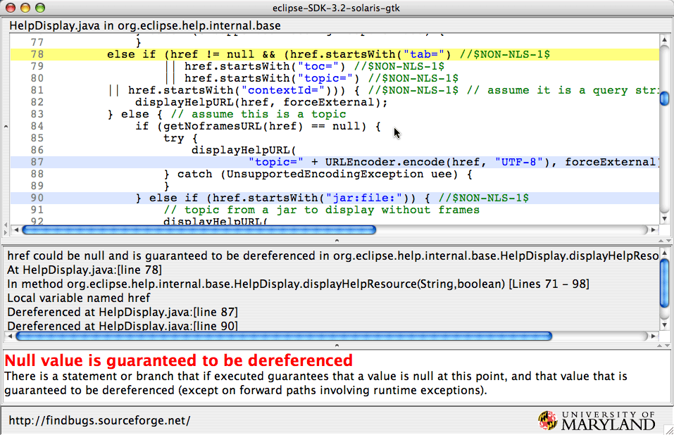

@HTML_SIDEBAR@
FindBugs Change Log, Version 1.2.0
Changes since version 1.1.3
- In null pointer analysis, try to be better about always showing two locations: where it is known null and
where it is dereferenced.
- Interprocedural analysis of which methods return nonnull values
- Use method calls to select order in which classes are analyzed, and order in which methods
are analyzed, to improve interprocedural analysis results.
- Significant improvements in memory footprint, memory allocation and CPU utilization
(20-30% reduction in all three)
- Added a project name, to provide better descriptions in the HTML output.
- Added new bug pattern: Casting to char, or bit masking with nonnegative value, and then checking to see
if the result is negative.
- Stopped reporting transient fields
of classes not marked as serializable. Transient is used by other persistence frameworks.
- Improvements to detector for SQL injection (Thanks to Matt Hargett for
his contributions
- Changed open/save options in GUI2 to not distinguish between FindBugs projects
and saved FindBugs analysis results.
- Improvements to detection of serious non-short-circuit evaluation.
- Updated Japanese localization (thanks to Ruimo Uno)
- Eclipse plugin changes:
- Created Bug User Annotations and Bug Tree Views
- Use different icons for different bug priorities
- Provide more information in Bug Details view
Changes since version 1.1.2:
- Fixed broken Ant task
- Added running ant task to smoketest
- Added validating xml and html output to smoketest
- Fixed some (but not all) issues with html output validation
- Added check for x.equals(x) and x.compareTo(x)
- Various bug fixes
Changes since version 1.1.1:
-
Added check for infinite iterative loops
-
Added check for use of incompatible types in a collection (e.g.,
checking to see if a Set<String> contains a StringBuffer).
-
Added check for invocations of equals or hashCode on a URL,
which,
surprising
many people, requires DNS resolution.
-
Added check for classes that define compareTo but not equals;
such classes can exhibit some anomalous behavior (e.g., they are
treated differently by PriorityQueues in Java 5 and Java 6).
-
Added a check for useless self operations (e.g., x < x or x ^ x).
-
Fixed a datarace that could cause the GUI to fail on startup
-
Partial internationalization of the new GUI
-
Fix bug in "Redo analysis" option of new GUI
-
Tuning to reduce false positives
-
Fixed a bug in null pointer analysis that was generating false
positive null pointer warnings on exception paths. Fixing this
bug eliminates about 1/4 of the warnings on null pointer
exceptions on exception paths.
-
Fixed a bug in the processing of phi nodes for fields in the null
pointer analysis
-
Applied contributed patch that provides more quick fixes in
Eclipse plugin.
-
Fixed a number of bugs in the Eclipse auto update sites, and in the way
date qualifiers were being used in the Eclipse plugin. You may need to manually
disable your existing version of the plugin and download the 1.1.2 from the update
site to get the automatic update function working correctly.
The Eclipse update sites are described at http://findbugs.cs.umd.edu/eclipse/.
-
Fixed progress bar in Eclipse plugin
-
A number of other bug fixes.
Changes since version 1.1.0:
-
less scanning of classes not on the analysis path (This was
causing some performance problems.)
-
no unread field warnings for fields annotated with
javax.persistent or javax.ejb3
-
Eclipse plugin
-
bug annotation info displayed in Bug Details tab
-
.fbwarnings data file now stored in .metadata (not in the
project itself)
-
new SE_BAD_FIELD_INNER_CLASS pattern
-
updates to Japanese translation (ruimo)
-
fix some internal slashed/dotted path confusion
-
other minor improvements
Changes since version 1.0.0:
-
Overall, the change from FindBugs 1.0.0 to FindBugs 1.1.0 has
been a big change. We've done a lot of work in a lot of areas,
and aren't even going to try to enumerate all the changes.
-
We spent a lot of time reviewing the results generated by
FindBugs for open source and commercial code bases, and made a
number of changes, small and large, to minimize the number of
false positives. Our primary focus for this was warnings reported
as high and medium priority correctness warnings. Our internal
evaluation is that we produce very few high/medium priority
correctness warnings where the analysis is actually wrong, and
that more than 75% of the high/medium priority correctness
warnings correspond to real coding defects that need addressing
in the source code. The remaining 25% are largely cases such as a
branch or statement that if taken would lead to an error, but in
fact is a dead branch or statement that can never be taken. Such
coding is confusing and hard to maintain, so it should arguably
be fixed, but it is unlikely to actually result in an error
during execution. Thus, some might classify those warnings as
false positives.
-
We've substantially improved the analysis for errors that could
result in null pointer dereferences. Overall, our experience has
been that these changes have roughly doubled the number of null
pointer errors we detect, without increasing the number of false
positives (in fact, our false positive rate has gone down). The
improvements are due to four factors:
-
By default, we now do some interprocedural analysis to
determine methods that unconditionally dereference their
parameters.
-
FindBugs also comes with a model of which JDK methods
unconditionally dereference their parameters.
-
We do limited tracking of fields, so that we can detect null
values stored in fields that lead to exceptions.
-
We implemented a new analysis technique to find guaranteed
dereferences. Consider the following example:
public int f(Object x, boolean b) {
int result = 0;
if (x == null) result++;
else result--;
// at this point, we know x is null on a simple path
if (b) {
// at this point, x is only null on a complex path
// we don't know if the path in which x is null and b is true is feasible
return result + x.hashCode();
}
else {
// at this point, x is only null on a complex path
// we don't know if the path in which x is null and b is false is feasible
return result - x.hashCode();
}
FindBugs 1.0 used forward dataflow analysis to determine
whether each value is definitely null, null on a simple path,
possible null on a complex path, or definitely nonnull. Thus,
at the statement where
result
is decremented, we know that
x
is definitely null, and at the point before
if (b)
, we know that
x
is null on a simple path. If
x
were to be dereferenced here, we would generate a warning,
because if the else branch of the
if (x == null)
were ever taken, a null pointer exception would result.
However, in both the then and else branches of the
if (b)
statement,
x
is only null on a complex path that may be infeasible. It
might be that the program logic is such that if
x
is null, then
b
is never true, so generating a warning about the dereference
in the then clause might be a false positive. We could try to
analyze the program to determine whether it is possible for
x
to be null and
b
to be true, but that can be a hard analysis problem.
However,
x
is dereferenced in both the then
and else branches of the
if (b)
statement. So at the point immediately before
if (b)
, we know that
x
is null on a simple path
and that
x
is guaranteed to be dereferenced on all paths from this point
forward. FindBugs 1.1 performs a backwards data flow analysis
to determine the values that are guaranteed to be
dereferenced, and will generate a warning in this case.
The following screen shot of our new GUI shows an example of
this analysis, as well as showing off our new GUI and points out
a limitation of our current plugins for Eclipse and Netbeans.
The screen shot shows a null pointer bug in HelpDisplay.java.
The test for
href!=null
on line 78 suggests that
href
could be null. If it is, then
href
will be dereferenced on either line 87 or on line 90, generating
a NPE. Note that our analysis here also understands that passing
href
to
URLEncoder.encode
will deference it, and thus treats line 87 as a dereference,
even though
href
is not actually dereferenced at that line. Within our new GUI,
all of these locations are highlighted and listed in the summary
panel. In the original GUI (and in HTML output) we list all of
the locations, but only the primary location is highlighted by
the original GUI. In the Eclipse and Netbeans plugins, only the
primary location is displayed; fixing this is on our todo list
(contributions welcome).

-
Preliminary support for detectors using the frameworks other than
BCEL, such as the
ASM bytecode framework.
You may experiment with writing ASM-based detectors, but beware
the API may still change (which could possibly also affect
BCEL-based detectors). In general, we've started trying to move
away from a deep dependence on BCEL, but that change is only
partially complete. Probably best to just avoid this until we
complete more work on this. This change is only visible to
FindBugs plugin developers, and shouldn't be visible to FindBugs
users.
-
Bug categories (CORRECTNESS, MT_CORRECTNESS, etc.) are no longer
hard-coded, but rather defined in xml files associated with
plugins, including the core plugin which defines the standard
categories. Third-party plugins can define their own categories.
-
Several bug patterns have been moved from CORRECTNESS and STYLE
into a new category, BAD_PRACTICE. The English localization of
STYLE has changed from "Style" to "Dodgy."
In general, we've worked very hard to limit CORRECTNESS bugs to
be real programming errors and sins of commission. We have
reclassified as BAD_PRACTICE a number of bad design practices
that result in overly fragile code, such as defining an equals
method that doesn't accept null or defining class with a equals
method that inherits hashCode from class Object.
In general, our guidelines for deciding whether a bug should be
classified as CORRECTNESS, BAD_PRACTICE or STYLE are:
-
CORRECTNESS
-
A problem that we can recognize with high confidence and is an
issue that we believe almost all developers would want to
examine and address. We recommend that software teams review
all high and medium priority warnings in their entire code
base.
-
BAD_PRACTICE
-
A problem that we can recognize with high confidence and
represents a clear violation of recommended and standard coding
practice. We believe each software team should decide which bad
practices identified by FindBugs it wants to prohibit in the
team's coding standard, and take action to remedy violations of
those coding standards.
-
STYLE
-
These are places where something strange or dodgy is going on,
such as a dead store to a local variable. Typically, less than
half of these represent actionable programming defects.
Reviewing these warnings in any code under active development
is probably a good idea, but reviewing all such warnings in
your entire code base might be appropriate only in some
situations. Individual or team programming styles can
substantially influence the effectiveness of each of these
warnings (e.g., you might have a coding practice or style in
your group that confuses one of the detectors into generating a
lot of STYLE warnings); you will likely want to selectively
suppress or report the STYLE warnings that are effective for
your group.
-
Released a preliminary version of a new GUI (known internally as
GUI2 -- not very creative, huh?)
-
Provided standard ways to mark user designations of bug warnings
(e.g., as NOT_A_BUG or SHOULD_FIX). The internal logic now
records this, it is represented in the XML file, and GUI2 allows
the designations to be applied (along with free-form user
annotations about each warning). The user designations and
annotations are not yet supported by the Eclipse plugin, but we
clearly want to support it in Eclipse shortly.
-
Added a check for a bad comparison with a signed byte with a
value not in the range -128..127. For example:
boolean find200(byte b[]) {
for(int i = 0; i < b.length; i++) if (b[i] == 200) return i;
return -1;
}
-
Added a checking for testing if a value is equal to Double.NaN
(no value is equal to NaN, not even NaN).
-
Added a check for using a class with an equals method but no
hashCode method in a hashed data structure.
-
Added check for uncallable method of an anonymous inner class.
For example, in the following code, it is impossible to invoke
the initalValue method (because the name is misspelled and as a
result is doesn't override a method in ThreadLocal).
private static ThreadLocal serialNum = new ThreadLocal() {
protected synchronized Object initalValue() {
return new Integer(nextSerialNum++);
}
};
-
Added check for a dead local store caused by a switch statement
fallthrough
-
Added check for computing the absolute value of a random 32 bit
integer or of a hashcode. This is broken because
Math.abs(Integer.MIN_VALUE) == Integer.MIN_VALUE
, and thus result of calling Math.abs, which is expected to be
nonnegative, will in fact be negative one time out of 2
32
, which will invariably be the time your boss is demoing the
software to your customers.
-
More careful resolution of inherited methods and fields. Some of
the shortcuts we were taking in FindBugs 1.0.0 were leading to
inaccurate results, and it was fairly easy to address this by
making the analysis more accurate.
-
Overall, analysis times are about 1.6 times longer in FindBugs
1.1.0 than in FindBugs 1.0.0. This is because we have enabled
substantial additional analysis at the default effort level (the
actual analysis engine is significantly faster than in FindBugs
1.0). On a recent AMD Athlon processor, analyzing JDK1.6.0 (about
1 million lines of code) requires about 15 minutes of wall clock
time.
-
Provided class and script (printClass) to print classfile in the
human readable format produced by BCEL
-
Provided -findSource option to setBugDatabaseInfo
Changes since version 0.9.7:
-
fix ObjectTypeFactory bug that was suppressing some bugs
-
opcode stack may determine definite zeros on some paths
-
opcode stack can track some constant string concatenations
(dbrosius)
-
default effort performs iterative opcode analysis (but min effort
does not)
-
default heap size upped to 384m
-
schema for XML output available: bugcollection.xsd
-
fixed some internal confusion between dotted and slashed class
names
-
New detectors
-
CheckImmutableAnnotation.java: checks JCIP annotations
-
Updated detectors
-
BadRegEx.java: understands Pattern.LITERAL, warns about "."
-
FindUnreleasedLock.java: fewer false positives
-
DumbMethods.java: check for vacuous comparisons to MAX_INTEGER
or MIN_INTEGER, fix bugs detecting DM_NEXTINT_VIA_NEXTDOUBLE
-
FindPuzzlers.java: detect
n%2==1, detect toString() on array types
-
FindInconsistentSync2.java: detects IS_FIELD_NOT_GUARDED
-
MethodReturnCheck.java: add check for discarded newly
constructed values, increase priority of some ignored
constructed exceptions, better handling of bytecode compiled by
Eclipse
-
FindEmptySynchronizedBlock.java: better handling of bytecode
compiled by Eclipse
-
DoInsideDoPrivileged.java: warn if call to setAccessible isn't
in doPriviledged, don't report private methods
-
LoadOfKnownNullValue.java: fix bug that was reporting false
positives on
finally
blocks
-
CheckReturnAnnotationDatabase.java: better checks for unstarted
threads
-
ConfusionBetweenInheritedAndOuterMethod.java: fewer false
positives, fixed a package-handling bug
-
BadResultSetAccess.java: separate bug pattern for
PreparedStatements,
BRZA
category folded into
SQL
category
-
FindDeadLocalStores.java, FindBadCast2.java, DumbMethods.java,
RuntimeExceptionCapture.java: coalesce similar bugs within a
method into a single bug instance with multiple source lines
-
Eclipse plugin
-
plugin ID changed from
de.tobject.findbugs to
edu.umd.cs.findbugs.plugin.eclipse
-
support for findbugs eclipse auto-update site
-
Updated test case files
-
BadRegEx.java
-
JSR166.java
-
ConcurrentModificationBug.java
-
DeadStore.java
-
InstanceOf.java
-
LoadKnownNull.java
-
NeedsToCheckReturnValue.java
-
BadResultSetAccessTest.java
-
DeadStore.java
-
TestNonNull2.java
-
TestImmutable.java
-
TestGuardedBy.java
-
BadRandomInt.java
-
six test cases added to new
TigerTraps
directory
-
fix bug that was generating duplicate uids
-
fix bug with
-onlyAnalyze some.package.*
on jdk1.4
-
fix regression bug in DismantleByteCode.getRefConstantOperand()
-
fix some minor bugs with the Swing GUI
-
reordered some bugInstances so that source line annotations come
last
-
removed references to unused java system properties
-
French translation updates (David Cotton)
-
Japanese translation updates (Hanai Shisei)
-
content cleanup for findbugs.xml and messages.xml
-
references to cvs hostname updated to
findbugs.cvs.sourceforge.net
-
documented xdoc output options, new
mineBugHistory/computeBugHistory options
Changes since version 0.9.6:
-
performance improvements
-
ObjectType instances are cached to reduce memory footprint
-
for performance and memory reasons stateless detectors are no
longer cloned, must clear their own state between .class files
-
fixed bug in bytecode-set lookup for methods (was causing bad
results for IS2, perhaps others)
-
fix some OpcodeStack bugs with integer and long operations,
perform iterative analysis when effort is
max
-
HTML output includes LongMessage text again (regression in 0.95 -
0.96)
-
New detectors
-
CalledMethods.java: builds a list of invoked methods for other
detectors to consult (non-reporting)
-
UncallableMethodOfAnonymousClass.java: detect anonymous inner
classes that define methods that are probably intended to but
do not override methods in a superclass.
-
Updated detectors
-
FindFieldSelfAssignment.java: recognize separate fields with
the same name (one from superclass)
-
FindLocalSelfAssignment2.java: handles backward branches better
(Dave Brosius)
-
FindBadCast2.java: BC_NULL_INSTANCEOF changed to
NP_NULL_INSTANCEOF
-
FindPuzzlers.java: eliminate false positive on setDate() (Dave
Brosius)
-
Eclipse plugin
-
fix serious threading bug
-
preferences for Filters and effort (Peter Hendriks)
-
French localization (David Cotton)
-
fix bug when reporting inner classes (Peter Friese)
-
Updated test case files
-
Mwn.java (Carl Burke/Dave Brosius)
-
DumbMethodInvocations.java (Anto paul/Dave Brosius)
-
XML output includes garbage collection duration
-
French messages updated (David Cotton)
-
Swing GUI shows file name after Load Bugs command
-
Ant task to launch the findbugs frame (Mark McKay)
-
miscellaneous code cleanup
Changes since version 0.9.5:
-
Updated detectors
-
FindNullDeref.java: respect NonNull and CheckForNull field
annotations
-
SerializableIdiom.java: detect non-private readObject and
writeObject methods
-
FindRefComparison.java: smarter array comparison detection
-
IsNullValueAnalysis.java: detect
null instanceof
-
FindLocalSelfAssignment2.java: suppress some false positives
(Dave Brosius)
-
FindUnreleasedLock.java: don't waste time processing classes
that don't refer to java.util.concurrent.locks
-
MutableStaticFields.java: report the source line (Dave Brosius)
-
SwitchFallthrough.java: better handling of System.exit() (Dave
Brosius)
-
MultithreadedInstanceAccess.java: better handling of
Servlet.init() (Dave Brosius)
-
ConfusionBetweenInheritedAndOuterMethod.java: now enabled
-
Eclipse plugin
-
background processing (Peter Friese)
-
internationalization, Japanese localization (Takashi Okamoto)
-
findbugs
-onlyAnalyze option now works on windows platforms
-
mineBugHistory
-noTabs option for better alignment of output columns
-
filterBugs
-fixed option (also: will now recognize the most recent
version string)
-
XML output includes running time and memory usage data
-
miscellaneous minor corrections to the manual
-
better bytecode analysis of the
iinc instruction
-
fix bug in null pointer analysis
-
improved catch block heuristics
-
some type analysis tweaks
-
Bug priority changes
-
DumbMethodInvocations.java: decrease priority of hard-coded
/tmp filenames
-
ComparatorIdiom.java: decrease priority of non-serializable
anonymous comparators
-
FindSqlInjection.java: decrease priority of appending a
constant or a static
-
Updated bug explanations
-
NM_VERY_CONFUSING (Dave Brosius)
-
Updated test case files
-
BadStoreOfNonSerializableObject.java
-
BadRandomInt.java
-
TestFieldAnnotations.java
-
UseInitCause.java
-
SqlInjection.java
-
ArrayEquality.java
-
BadIntegerOperations.java
-
Pilhuhn.java
-
InstanceOf.java
-
SwitchFallthrough.java (Dave Brosius)
-
fix URL decoding bug when running under Java Web Start (Dave
Brosius)
-
distribution includes
project.xml file for NetBeans
Changes since version 0.9.4:
-
New detectors
-
VarArgsProblems.java
-
FindSqlInjection.java: now enabled
-
ComparatorIdiom.java: comparators usually implement
serializable
-
Naming.java: detect methods not overridden due to eponymously
typed args from different packages
-
Updated detectors
-
SwitchFallthrough.java: surpress some false positives
-
DuplicateBranches.java: surpress some false positives
-
IteratorIdioms.java: surpress some false positives
-
FindHEmismatch.java: surpress some false positives
-
QuestionableBooleanAssignment.java: finds more cases of
if (b=true) ilk
-
DumbMethods.java: detect int remainder by 1, delayed gc errors
-
SerializableIdiom.java: detect store of nonserializable object
into field of serializable class
-
FindNullDeref.java: fix potential exception
-
IsNullValue.java: fix potential exception
-
MultithreadedInstanceAccess.java: fix potential exception
-
PreferZeroLengthArrays.java: flag the method, not the line
-
Remove some inadvertent dependencies on JDK 1.5
-
Sort order should be more consistent
-
XML output changes
-
Option to sort XML bug output
-
Now contains instance IDs
-
uid no longer missing (was causing problems with fancy HTML
output)
-
Typo fixed
-
Internal changes to track source files,
-sourceInfo option
-
Bug matching: first try exact bug pattern matching, option to
compare priorities, option to disable package moves
-
Architecture documentation in
design/architecture
-
Test cases move into their own CVS project
-
Don't report warnings that occur outside the analyzed classes
-
Fixes to the build.xml files
-
Better handling of @CheckReturnValue and @CheckForNull
annotations (also, some additional methods searched for check
return value and check for null)
-
Fixed some stream-closing bugs (one by
z-fb-user/Dave Brosius)
-
Bug priority changes
-
increase priority of ignoring return value of
java.sql.Connection methods
-
increase priority of comparing classes like Integer using
==
-
decrease priority of IT_NO_SUCH_ELEMENT if we see any call to
next()
-
tweak priority of NM_METHOD_CONSTRUCTOR_CONFUSION
-
decrease priority of RV_RETURN_VALUE_IGNORED for an inherited
annotation that doesn't return same type as class
-
Updated bug explanations
-
RCN_REDUNDANT_NULLCHECK_WOULD_HAVE_BEEN_A_NPE
-
DP_CREATE_CLASSLOADER_INSIDE_DO_PRIVILEGED
-
IMA_INEFFICIENT_MEMBER_ACCESS (Dave Brosius)
-
some Japanese improvements to messages_ja.xml (
ruimo)
-
some German improvements to findbugs_de.properties (Dave
Brosius,
dvholten)
-
Updated test case files
-
BadIntegerOperations.java
-
SecondKaboom.java
-
OpenDatabase.java (Dave Brosius)
-
FindOpenStream.java (Dave Brosius)
-
BadRandomInt.java
-
Source-lines info maintained for methods (handy for abstract and
native methods)
-
Remove surrounding opcodes from source line annotations
-
Better error when can't read file
-
Swing GUI: removed console pane from FindBugsFrame, fix missing
classes bug
-
Fixes to OpcodeStack.java
-
Detectors may attach a custom value to an OpcodeStack.Item (Dave
Brosius)
-
Filter.java: ability to add text messages to XML output, fix bug
with
-withMessages
-
SourceInfoMap supports ranges of source lines
-
Ant task supports the
timestampNow attribute
Changes since version 0.9.3:
-
Substantial rework of datamining code
-
Removed bogus warnings about await on things other than Condition
not being in a loop
-
Fixed bug in OpcodeStack handling of dup2 of long/double values
-
Don't report array types as missing classes
-
Adjustment of some warnings on ignored return values
-
Added thread safety annotations from Java Concurrency in Practice
(no detectors written for these yet)
-
Added annotation for methods that, if overridden, should be
invoked by overriding methods via a call to super
-
Updated -html:fancy.xsl (Etienne Giraudy)
Note: there was no version 0.9.2
Changes since version 0.9.1:
-
Embellish USM to find abstract methods that implement an
interface method (Dave Brosius)
-
New detector to find stores of literal booleans inside if or
while expressions (Dave Brosius)
-
New style detector to find final classes that declare protected
fields (Dave Brosius)
-
New detector to find subclass methods that simply forward,
verbatim, to the super class (Dave Brosius)
-
Detector to find instances where code is attempting to write an
object out via an implementation of DataOutput, but the object is
not guaranteed to be Serializable (Jon Christiansen, Bill Pugh)
-
Large (35%) analysis speedup (Bill Pugh)
-
Add line numbers to Swing GUI code panel (Dave Brosius)
-
Added effort options to Swing GUI (Dave Brosius)
-
Add ability to specify bugs file to open from command line for
GUI version, through -loadbugs (Phillip Martin)
-
New stylesheet for generating HTML: use option
-html:plain.xsl (Chris Nappin)
-
New stylesheet for generating HTML: use option
-html:fancy.xsl (Etienne Giraudy)
-
Updated Japanese bug message translations (Shisei Hanai)
-
XHTML compliance fixes for bug details (Etienne Giraudy)
-
Various detector fixes (Shisei Hanai)
-
Fixed bugs in the project preferences dialog int the Eclipse
plugin (Takashi Okamoto, Thomas Einwaller)
-
Lowered priority of analysis thread in Swing GUI (David
Hovemeyer, suggested by Shisei Hanai and Jeffrey W. Badorek)
-
Fixed EclipsePlugin to correctly pick up auxclasspath entries
(Jon Christiansen)
Changes since version 0.9.0:
-
Fixed dependence on JRE 1.5: all features should work on JRE 1.4
again
-
Fixed -effort command line option handling for Swing GUI
-
Fixed conserveSpace and workHard attributes int Ant task
-
Added support for effort attribute in Ant task
Changes since version 0.8.8:
-
XMLFactoryBypass detector to find direct allocation of xml class
implementations (Dave Brosius)
-
InefficientMemberAccess detector to find accesses to owning class
private members (Dave Brosius)
-
DuplicateBranches detector checks switch statements too (Dave
Brosius)
-
FindBugs available from findbugs.sourceforge.net as Java Web
Start application (Dave Brosius)
-
Updated Japanese bug message translations (Shisei Hanai)
-
Improved bug detail message for covariant equals() (Shisei Hanai)
-
Modeling of instanceof checks is now enabled by default, making
the bad cast detector much more useful (Bill Pugh, David
Hovemeyer)
-
Support for detector ordering constraints in plugin descriptor
(David Hovemeyer)
-
Simpler option to control analysis effort: -effort:
value, where
value is one of
min
,
default
, or
max
(David Hovemeyer)
-
Using -effort:max, FindNullDeref checks for null arguments passed
to methods which dereference them unconditionally (David
Hovemeyer)
-
FindNullDeref checks @Null and @NonNull annotations for
parameters and return values (David Hovemeyer)
Changes since version 0.8.7:
-
New detector to find duplicate code in if/else statements (Dave
Brosius)
-
Look for calls to wait() on Condition objects (David Hovemeyer)
-
Look for java.util.concurrent.Lock objects not released on every
path out of method (David Hovemeyer)
-
Look for calls to Thread.sleep() with a lock held (David
Hovemeyer)
-
More accurate detection of impossible casts (Bill Pugh, David
Hovemeyer)
-
Saved XML now contains project statistics (Jay Dunning)
-
Filter files can select by bug pattern type and warning priority
(David Hovemeyer)
-
Restored some files inadvertently omitted from previous release
(Rohan Lloyd, David Hovemeyer)
-
Make sure detectors requiring JDK 1.5 runtime classes are only
executed if those classes are available (David Hovemeyer)
-
Don't display analysis error dialog unless there is really an
error (David Hovemeyer)
-
Updated and expanded French translations of bug patterns and
Swing GUI (Olivier Parent)
-
Fixed invalid character encoding in German Swing GUI translation
(Olivier Parent)
-
Fix locale used for date format in project stats (K. Hashimoto)
-
Fixed LongDescription elements in xml:withMessages output format
(K. Hashimoto)
Changes since version 0.8.6:
-
Extend Naming detector to look for classes that are named
XXXException but that are not Exceptions (Dave Brosius)
-
New detector to find classes that expose semaphores in the public
implementation through the 'this' reference. (Dave Brosius)
-
New Style detector to find Struts Action/Servlet derived classes
that reference instance member variable not in synchronized
blocks. (Dave Brosius)
-
New Style detector to find classes that declare implementation of
interfaces that are already implemented by super classes (Dave
Brosius)
-
New Style detector to find circular dependencies between classes
(Dave Brosius)
-
New Style detector to find unnecessary math on constants (Dave
Brosius)
-
New detector to find equality comparisons using floating point
math (Jay Dunning)
-
New faster detector to find local self assignments (Bill Pugh)
-
New detector to find infinite recursive loops (Bill Pugh)
-
New detector to find for loops with an incorrect increment (Bill
Pugh)
-
New detector to find suspicious uses of BufferedReader.readLine()
and String.indexOf() (Bill Pugh)
-
New detector to find suspicious integer to double casts (David
Hovemeyer, Bill Pugh)
-
New detector to find invalid regular expression patterns (Bill
Pugh)
-
New detector to find Bloch/Gafter Java puzzlers (Bill Pugh)
-
New system property to suppress reporting of DLS based on local
variable name (Glenn Boysko)
-
Enhancements to configuration dialog in Eclipse plugin, allow for
saving enabled detectors in Eclipse projects (Phil Crosby)
-
Sortable columns in detector dialog (Dave Brosius)
-
New tab in gui for showing bugs grouped by category (Dave
Brosius)
-
Improved German translation of Swing GUI (Thomas Kuehne)
-
Improved source file reporting in Emacs output format (Len Trigg)
-
Improvements to redundant null comparison detector (Bill Pugh)
-
Localization of run analysis and analysis error dialogs in Swing
GUI (K. Hashimoto)
-
Don't scan equals methods in FindHEMismatch if code is native
(Greg Bentz)
-
French translation fixes (David Cotton)
-
Internationalization report fixes (K. Hashimoto)
-
Japanese translations updates (SHISEI Hanai)
Changes since version 0.8.5:
-
New detector to find catch blocks that may inadvertently catch
runtime exceptions (Brian Goetz)
-
New detector to find objects that are instantiated based on
classes that only have static methods and fields, using the
synthesized constructor (Dave Brosius)
-
New detector to find calls to Thread.interrupted() in a non
static context, and especially with non currentThread() threads
(Dave Brosius)
-
New detector to find calls to equals() methods that use Object's
version. (Dave Brosius)
-
New detector to find Applets that call methods in the constructor
refering to the AppletStub (Dave Brosius)
-
New detector to find some cases of infinite recursion (Bill Pugh)
-
New detector to find dead stores to local variables (David
Hovemeyer, Bill Pugh)
-
Extend Dumb Method detector for toUpperCase(), toLowerCase()
without a locale, new Integer(1).toString(), new
XXX().getClass(), and new Thread() without a run implementation
(Dave Brosius)
-
Ant task supports "errorProperty" attribute, which sets an Ant
property to "true" if an error occurs running FindBugs (Michael
Tamm)
-
Eclipse plugin allows filtering of warnings by bug category,
priority (David Hovemeyer)
-
Swing GUI allows filtering of warnings by bug category (David
Hovemeyer)
-
Ability to annotate methods using Java 1.5 annotations that
suppress FindBugs warnings (Bill Pugh)
-
New -adjustExperimental for lowering priority of BugPatterns that
are experimental (Dave Brosius)
-
Allow for command line options 'files' using the @ symbol (David
Hovemeyer)
-
New -adjustPriority command line option to for adjusting bug
priorites (David Hovemeyer)
-
Added an Edit menu (cut/copy/paste) to Swing GUI (Dave Brosius)
-
French translation supplied (David Cotton)
Changes since version 0.8.4:
-
New detector for volatile references to arrays (Bill Pugh)
-
New detector to find instanceof usage where inheritance can be
determined statically (Dave Brosius)
-
New detector to find ResultSet.getXXX updateXXX calls using index
0 (Dave Brosius)
-
New detector to find empty zip or jar entries (Bill Pugh)
-
HTML output generation using built-in XSLT stylesheet or
user-defined stylesheet (David Hovemeyer)
-
Allow URLs to be specified to analyze zip/jar files, local
directories, and single classfiles (David Hovemeyer)
-
New command line option -onlyAnalyze restricts analysis to
selected classes and packages without reducing accuracy (David
Hovemeyer)
-
Allow Swing GUI to show source code in jar files on Windows
systems (Dave Brosius)
-
Fix the Switch Fall Thru detector (Dave Brosius, David Hovemeyer,
Bill Pugh)
-
MacOS GUI fixes (Rohan Lloyd)
-
Fix false positive in BOA in case where method is correctly and
'incorrectly' overridden (Dave Brosius)
-
Fixed memory blowup when analyzing methods which access a large
number of fields (David Hovemeyer)
Changes since version 0.8.3:
-
Initial and preliminary localization of the Swing GUI.
Translations by:
-
German - Peter D. Stout, Holger Stenzhorn
-
Finnish - Juha Knuutila
-
Estonian - Tanel Lebedev
-
Japanese - Hanai Shisei
-
Eliminated debug print statements inadvertently left enabled
-
Reverted some changes in the open stream detector: this should
fix some false positives that were introduced in the previous
release
-
Fixed a couple missing class reports
Changes since version 0.8.2:
-
New detector to find improperly overridden GUI Adapter classes
(Dave Brosius)
-
New detector to find improperly setup JUnit TestCases (Dave
Brosius)
-
New detector to find variables that mask class level fields (Dave
Brosius)
-
New detector to find comparisons of values computed with bitwise
operators that always yield the same result (Tom Truscott)
-
New detector to find unsafe getClass().getResource() calls (Bill
Pugh)
-
New detector to find GUI changes not in GUI thread but in static
main (Bill Pugh)
-
New detector to find calls to Collection.toArray() with
zero-length array argument; it is more efficient to pass an array
the size of the collection, which can be populated and returned
as the result (Dave Brosius)
-
Better suppression of false warnings in various detectors (Bill
Pugh, David Hovemeyer)
-
Enhancement to ReadReturnShouldBeChecked detector for skip()
(Dave Brosius)
-
Enhancement to DumbMethods detector (Dave Brosius)
-
Open stream detector does not report wrappers of streams passed
as method parameters (David Hovemeyer)
-
Cancel confirmation dialog in Swing GUI (Pete Angstadt)
-
Better relative path saving in Project file (Dave Brosius)
-
Detector Priority in GUI is now saved in prefs file (Dave
Brosius)
-
Controls in GUI to reorder source and classpath entries, and
ability to flip between Project details and bugs pages (Dave
Brosius)
-
In Swing GUI, analysis error dialog supports "Select All" and
"Copy" operations for easy generation of error reports (Dave
Brosius)
-
Complete translation of bug descriptions and messages into
Japanese (Hanai Shisei)
-
Fixed bug in DroppedException detector (Dave Brosius)
-
The source distribution defaults to using JDK 1.5 javac to
compile, but support for compiling with JSR-14 prototype is still
supported
Changes since version 0.8.1:
-
Fixed a critical ClassCastException bug (triggered if the
-workHard option was used, and an exception type was merged with
an array type during type inference)
Changes since version 0.8.0:
-
Disabled SwitchFallthrough detector to work around
NullPointerExceptions
-
Added some additional false positive suppression heuristics
Also, two contributors to the 0.8.0 release were inadvertently
left out of the credits:
-
Pete Angstadt fixed several problems in the Swing GUI
-
Francis Lalonde provided a task resource file for the FindBugs
Ant task
Changes since version 0.7.4:
-
New detector to look for uses of "+" operator to concatenate
String objects in a loop (Dave Brosius)
-
Reference comparison detector looks for places where the argument
passed to the equals(Object) method isn't the same type as the
receiver object
-
Better suppression of false warnings in many detectors
-
Many improvements to Eclipse plugin (Andrei Loskutov, Peter
Friese)
-
Fixed problem with building Eclipse plugin on Windows (Thomas
Klaeger)
-
Open stream detector looks for unclosed PreparedStatement objects
(Thomas Klaeger, Rohan Lloyd)
-
Fix for open stream detector: it wasn't detecting close() methods
called through an invokeinterface instruction (Thomas Klaeger)
-
Refactoring of visitor classes to enforce use of accessors for
visited class features (Brian Goetz)
Changes since version 0.7.3:
-
Experimental modification of open stream detector to look for
non-escaping JDBC resources (connections and statements) that
aren't closed on all paths out of method
-
Eclipse plugin fixed so it compiles and runs on Eclipse 2.1.x
(Peter Friese)
-
Option to Swing GUI and command line to generate project file
using relative paths for archives, source directories, and aux
classpath entries (Dave Brosius)
-
Improvements to findbugs.bat script for launching FindBugs on
Windows (Dave Brosius)
-
Updated Japanese message translations (Hiroshi Okugawa)
-
Uncalled private methods are now reported as low priority, unless
they have the same name as another method in the class (which is
more likely to indicate an actual bug)
-
Added some missing data in the bug messages XML files
-
Fixed some problems building from source on Windows systems
-
Various minor bug fixes
Changes since version 0.7.2:
-
Enhanced Eclipse plugin, which displays the detailed bug
description in a view (Phil Crosby)
-
Various tweaks to existing detectors to reduce false warnings
-
New command line option
-workHard
enables pruning of infeasible or unlikely exception edges, which
results in better accuracy in the open stream detector, at the
expense of a 30%-100% slowdown
-
New website and HTML documentation design
-
Documentation includes an HTML document with descriptions of all
bug patterns reported by FindBugs
-
Web page has a link to a
Japanese
translation of the FindBugs manual, contributed by Hiroshi
Okugawa
-
Changed the Inconsistent Synchronization detector so that fields
synchronized 50% of the time (or more) are reported as medium
priority bugs (previously they were reported as low)
-
New detector to find code that catches
IllegalMonitorStateException
-
New detector to find private methods that are never called
-
New detector to find suspicious uses of non-short-circuiting
boolean operators (
&
and
|
, rather than
&&
and
||
)
Changes since version 0.7.1:
-
Incorporated patched version of BCEL, which allows classes
compiled with JDK 1.5.0 beta to be analyzed
-
Fixed some bugs related to lookups of array classes
-
Fixed bug that prevented GUI from loading XML result files when
running under JDK 1.5.0 beta
-
Added new experimental bug detector, LazyInit, which looks for
potentially buggy lazy initializations of static fields
-
Because of long filenames, switched to distributing the source
archive as a zip file rather than a tar file
-
The 0.7.1 source tarfile was botched - 0.7.2 has a valid source
archive
-
Fixed some problems in the Ant build script
-
Fixed NullPointerException when checking Class-Path attribute for
Jar files without manifests
-
Generate version numbers for the core and UI Eclipse plugins
using the Version class; all version numbers are now in a common
location
Changes since version 0.7.0:
-
Eclipse plugin (contributed by Peter Friese)
-
Source package structure rearranged: all source (other than
Eclipse plugin UI) is in the edu.umd.cs.findbugs package, or a
subpackage
-
Class-Path attributes of manifests of analyzed jar files are used
to set the aux classpath automatically (Peter D. Stout)
-
GUI starts in directory specified by user.home property (Peter D.
Stout)
-
Added -project option to GUI (Mikko T.)
-
Added -look:{plastic,gtk,native} option to GUI, for setting look
and feel (Mikko T.)
-
Fixed DataflowAnalysisException in inconsistent synchronization
detector
-
Ant task supports failOnError parameter (Rohan Lloyd)
-
Serializable class warnings are downgraded to low priority for
GUI classes
-
MWN detector will only report calls to wait(), notify(), and
notifyAll() methods that have the correct signature
-
FindBugs works with latest CVS version of BCEL
-
Zip and Jar files may be added to the source path
-
The GUI will automatically find source files residing in analyzed
Zip or Jar files
Note that the version number jumped from 0.6.6 to 0.6.9; there
were no 0.6.7 or 0.6.8 releases.
Changes since version 0.6.9:
-
Added -conserveSpace option to reduce memory use at the expense
of analysis precision
-
Bug fixes in findbugs.bat script: JAVA_HOME handling,
autodetection of FINDBUGS_HOME, missing output with -textui
-
Fixed NullPointerException when a missing class is encountered
Changes since version 0.6.6:
-
The null pointer dereference detector is more powerful
-
Significantly improved heuristics and bug fixes in inconsistent
synchronization detector
-
Improved heuristics in open stream and dropped exception
detectors; fewer false positives should be reported
-
Save HTML summary in XML results files, rather than recomputing;
this makes loading results in GUI much faster
-
Report at most one String comparison using == or != per method
-
The findbugs.bat script on Windows autodetects FINDBUGS_HOME, and
doesn't open a DOS window when launching the GUI (contributed by
TJSB)
-
Emacs reporting format (contributed by David Li)
-
Various bug fixes
Changes since 0.6.5:
-
Rewritten inconsistent synchronization detector; accuracy is
significantly improved, and bug reports are prioritized
-
New detector to find self assignment (x=x) of local variables
(suggested by Jeff Martin)
-
New detector to find calls to wait(), notify(), and notifyAll()
on an object which is not obviously locked
-
Open stream detector now reports Readers and Writers
-
Fixed bug in finalizer idioms detector which caused spurious
warnings about failure to call super.finalize() (reported by Jim
Menard)
-
Fixed bug where output stream was not closed using non-XML output
(reported by Sigiswald Madou)
-
Fixed corrupted HTML bug detail message (reported by Trevor
Harmon)
Changes since version 0.6.4:
-
For redundant comparison of reference values, fixed false
positives resulting from duplication of code in finally blocks
-
Fixed false positives resulting from wrapped byte array streams
left open
-
Fixed bug in Ant task preventing output file from working
properly if a relative path was used
Changes since version 0.6.3:
-
Fixed bug in Ant task where output would be corrupted, and added
a
timeout
attribute
-
Added -outputFile option to text UI, for explicitly specifying an
output file
-
GUI has a summary window, for statistics about overall bug
densities (contributed by Mike Fagan)
-
Find redundant comparisons of reference values
-
More accurate detection of Strings compared with == and !=
operators
-
Detection of other reference types which should generally not be
compared with == and != operators; Boolean, Integer, etc.
-
Find non-transient non-serializable instance fields in
Serializable classes
-
Source code may be compiled with latest early access
generics-enabled javac (version 2.2)
Changes since version 0.6.2:
-
GUI supports filtering bugs by priority
-
Ant task rewritten; supports all functionality offered by Text UI
(contributed by Mike Fagan)
-
Ant task is fully documented in the manual
-
Classes in nested archives are analyzed; this allows full support
for analyzing .ear and .war files (contributed by Mike Fagan)
-
DepthFirstSearch changed to use non-recursive implementation;
this should fix the StackOverflowErrors that several users
reported
-
Various minor bugfixes and improvements
Changes since version 0.6.1:
-
New detector to look for useless control flow (suggested by
Richard P. King and Mike Fagan)
-
Look for places where return value of
java.io.File.createNewFile() is ignored (suggested by Richard P.
King)
-
Fixed bug in resolution of source files (only the first source
directory was searched)
-
Fixed a NullPointerException in the bytecode pattern matching
code
-
Ant task supports project files (contributed by Mike Fagan)
-
Unix findbugs script honors the
JAVA_HOME
environment variable (contributed by Pedro Morais)
-
Allow .war and .ear files to be analyzed
Changes since version 0.6.0:
-
New bug pattern detector which looks for places where a null
pointer might be dereferenced
-
New bug pattern detector which looks for IO streams that are
opened, do not escape the method, and are not closed on all paths
out of the method
-
New bug pattern detector to find methods that can return null
instead of a zero-length array
-
New bug pattern detector to find places where the == or !=
operators are used to compare String objects
-
Command line interface can save bugs as XML
-
GUI can save bugs to and load bugs from XML
-
An "Annotations" window in the GUI allows the user to add textual
annotations to bug reports; these annotations are preserved when
bugs are saved as XML
-
In this release, the Japanese bug summary translations by Germano
Leichsenring are really included (they were inadvertently omitted
in the previous release)
-
Completely rewrote the control flow graph builder, hopefully for
the last time
-
Simplified implementation of control flow graphs, which should
reduce memory use and possibly improve performance
-
Improvements to command line interface (list bug priorities,
filter by priority, specify aux classpath, specify project to
analyze)
-
Various bug fixes and enhancements
Changes since version 0.5.4
-
Added an
Ant task for FindBugs,
contributed by Mike Fagan.
-
Added a GUI dialog which allows individual bug pattern detectors
to be enabled or disabled. Disabling certain slow detectors
can greatly speed up analysis of large programs, at the expense
of reducing the number of potential bugs found.
-
Added a new detector for finding improperly ignored return values
for methods such as
String.trim()
. Suggested by Andreas Mandel.
-
Japanese translations of the bug summaries, contributed by
Germano Leichsenring.
-
Filtering of results is supported in command line interface. See
the
FindBugs manual for details.
-
Added "byte code patterns", a general pattern matching
infrastructure for bytecode instructions. This feature
significantly reduces the complexity of implementing new bug
pattern detectors.
-
Enabled a new general dataflow analysis to track values in
methods.
-
Switched to new control-flow graph builder implementation.
Changes since version 0.5.3
-
Fixed a bug in the script used to launch FindBugs on Windows
platforms.
-
Fixed crashes when analyzing class files without source line
information.
-
All major errors are reported using an error dialog; file not
found errors are more informative.
-
Minor GUI improvements.
Changes since version 0.5.2
-
All of the source code and related files are in a single
directory tree.
-
Updated some of the detectors to produce source line information.
-
Ant build script and several
GUI enhancements and fixes contributed by Mike Fagan.
-
Converted to use a
plugin architecture for loading
bug detectors.
-
Eliminated generics-related compiler warnings.
-
More complete documentation has been added.
Changes since version 0.5.1:
-
Fixed a large number of bugs in the BCEL Repository and
FindBugs's use of the Repository. With these changes,
FindBugs should
never crash or otherwise misbehave because of Repository
lookup failures. Because of these changes, you must use a
modified version of
bcel.jar
with FindBugs. This jar file is included in the FindBugs
0.5.2 binary release. A complete patch containing the
modifications
against the BCEL CVS main branch as of April 30, 2003 is also
available.
-
Implemented the "auxiliary classpath entry list". Aux
classpath entries can be added to a project to provide classes
that are referenced by the analyzed application, but should not
themselves be analyzed. Having all referenced classes
available allows FindBugs to produce more accurate results.
Changes since version 0.5.0:
-
Many user interface bugs have been fixed.
-
Upgraded to a recent CVS version of BCEL, with some bug
fixes. This should prevent FindBugs from crashing when
there is a failure to find a class on the classpath.
-
Added support for Plastic look and feel from
jgoodies.com.
-
Major overhaul of infrastructure for doing dataflow analysis.
@HTML_FOOTER@
|